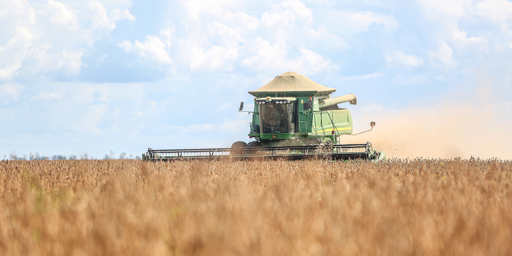
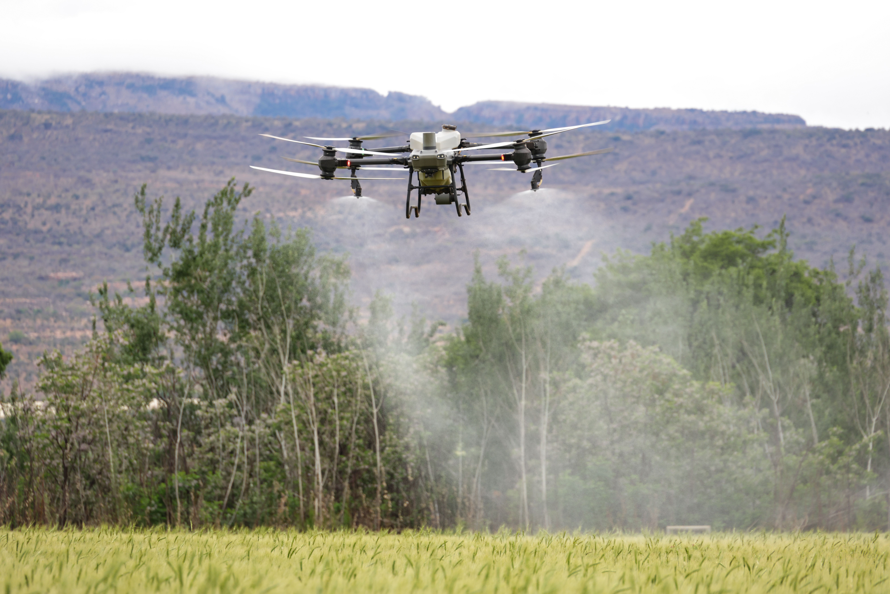
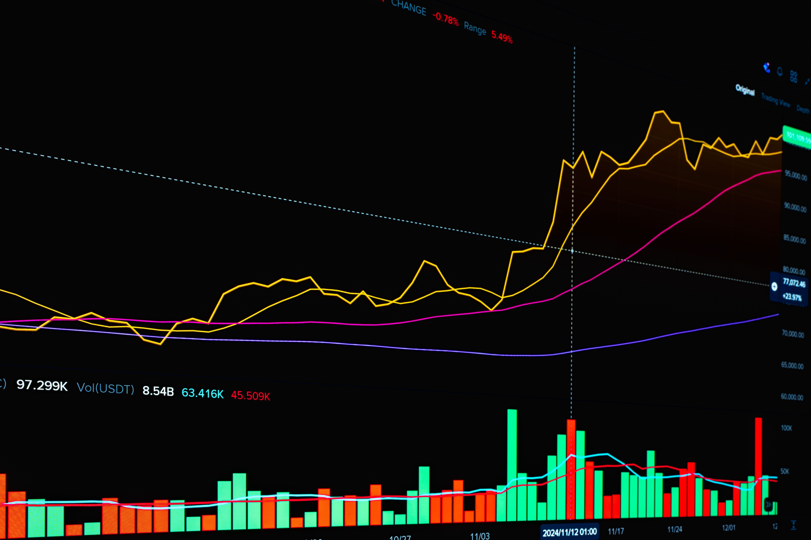
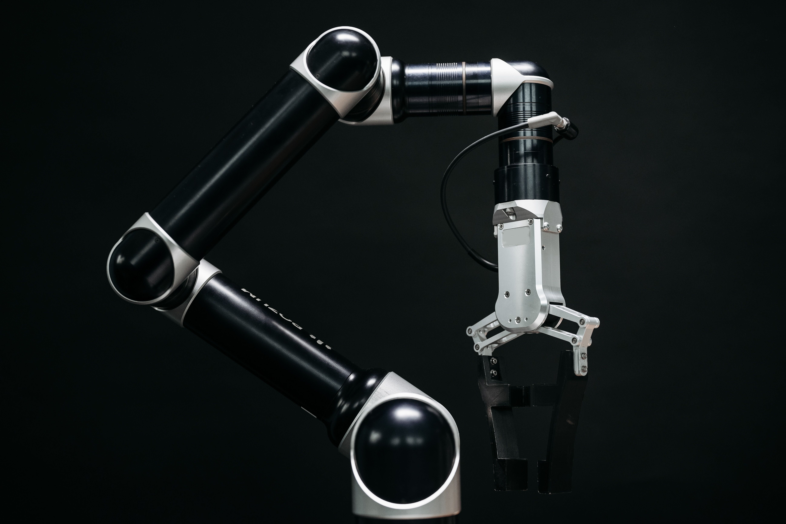

AgroShield
Ciberseguridad IT/OT
Conoce nuestro sistema de protección de las bases de datos
Hoy en día el sector agroalimentario abarca desde la producción en el campo y la ganadería hasta la producción y transformación en las fábricas. La agricultura y la ganadería se trata del modelo de economía más longevo que ha existido en el planeta, dando lugar su primera aparición en la edad del Neolítico. Pero a diferencia de la prehistoria, actualmente este sector se enfrenta a muchos problemas de cara a la tecnología: es necesaria la adaptación a los nuevos tiempos y a las nuevas tecnologías que optimizan los diferentes procesos de producción y transformación, teniendo que lidiar también con los limitados recursos existentes en el planeta. Para ello, debemos optimizar el uso del agua y energía, evitar el desecho de los excedentes, y garantizar la calidad de los productos y cumplir con normativas medioambientales cada vez más estrictas. Nuestro equipo de consultoría ayudará a este sector a superar los retos diarios que lo desafían.
Nuestro equipo se encarga de impulsar la agricultura y la ganadería, proporcionando soluciones innovadoras para que hasta los negocios más pequeños se conviertan en los más grandes. Proporcionamos soluciones y medios tanto digitales, para mejorar la eficiencia operativa y mejorar su alcance al mercado, como medios físicos tecnológicos, para aumentar la producción y mejorar el cuidado del producto. También tenemos como objetivo llegar a ser la consultora líder del mercado agrícola y llegar a ser el ejemplo a seguir de la industria 5.0, colocando al ser humano, la sostenibilidad y la resiliencia en el centro de la actividad industrial, y logrando un sector 100% conectado. Durante este proceso tendremos muy en cuenta la huella de carbono. Evitaremos expulsar más CO2 del que el propio medioambiente pueda absorber, y evitaremos utilizar medios y métodos que puedan perjudicar a la ecología del planeta, proporcionando a parte de soluciones tecnológicas, soluciones basadas en la propia naturaleza.
Para entender la transformación digital actual del sector agroalimentario, es fundamental comprender cómo ha evolucionado la tecnología a lo largo de las distintas revoluciones industriales. Cada una de las etapas de la industria ha marcado un hito en la eficiencia y la producción de alimentos:
Se pasó de la producción manual o artesanal a la mecanización, gracias a la máquina de vapor y la energía hidráulica. Surgieron las primeras fábricas, transformando el sector textil y el transporte.
Se produjo el nacimiento de la producción en masa y las líneas de montaje, lo que redujo drásticamente los tiempos y costos de fabricación.
Se trata del inicio de la automatización digital. Las máquinas comenzaron a realizar tareas repetitivas y complejas con menor intervención humana.
Los entornos digitales integrados conectan las máquinas, los datos y las personas en tiempo real, permitiendo la toma de decisiones de forma autónoma y una gran variedad de opciones para personalizar los procesos.
Regresa la intervención humana al centro de la producción. Combina la precisión de los robots con la creatividad y el criterio del trabajador, priorizando la sostenibilidad, la resiliencia y la personalización de los productos.
Ciberseguridad IT/OT
Conoce nuestro sistema de protección de las bases de datosIT (Negocio)
Conoce nuestro sistema de gestión centralizada
IoT (Internet de las Cosas)
Conoce nuestro sistema de inteligencia artificial aplicada al campo
IT (Negocio y Estrategia)
Conoce nuestro sistema de predicción y estimación en el mercado y en la cosecha
OT (Planta / Envasado)
Conoce nuestro sistema de automatización y robóticaIT y OT (Blockchain)
Conoce nuestro sistema de rastreo y trazabilidadOT (Producto / Envasado)
Conoce nuestros servicios biotecnológicosRegistrate en nuestra web para obtener mas información acerca de nuestros productos y servicios.